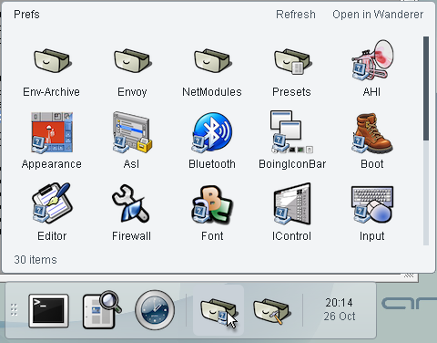
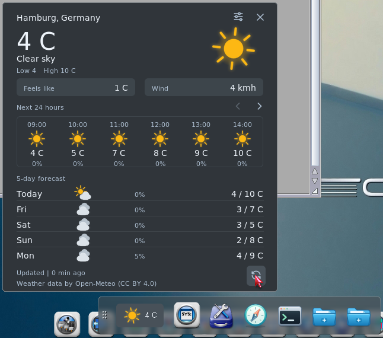

Browse a drawer from the dock
Keep your project directory or system tools close. Open its contents as a panel, browse subdrawers and launch files. The panel follows changes in the drawer.
FOR THE AROS DESKTOP
Your everyday applications, a group of project tools, a drawer full of files. Keep them close, and give your own widgets a home.
Open source · PC & Raspberry Pi · Version 0.6.2
Illustration of a grouped workspace · Original Dockbar icons
01 / GROUPS & LAYOUT
Give each project its own place. A group keeps related shortcuts together and opens into a grid when you need them.
Hold one application over another, then release to create a group. Add more items, rearrange them, or pull a shortcut back onto the dock. Move items between groups and docks as your workspace changes.
Arrange the desktop around your work. Use several docks, choose a horizontal or vertical layout, and give each one its own appearance.
Hold one launcher over another to form a group.
Drop shortcuts into the panel, or hold over the group to open it.
Pick a tool from the grid. Drag it out when it deserves a place of its own.
02 / EVERYDAY USE
Open a file, browse a drawer, launch a favourite. The dock is part of the way you work with AROS.

Keep your project directory or system tools close. Open its contents as a panel, browse subdrawers and launch files. The panel follows changes in the drawer.
Set a launcher to accept dropped files, then drop a document onto your editor or viewer. Commands and scripts can accept files too.
Drop an application from Wanderer to pin it. Choose icons, labels and backgrounds. Shift-click an item to edit it; removing a shortcut leaves the original file untouched.

Weather on AROS One · Screenshot from Dockbar 0.5.2
INCLUDED WIDGET / WEATHER
Current conditions on the dock. An hourly outlook and the next five days in a card beside it.
Choose a city and units, then keep the forecast in view. Add a second instance for another location, with independent settings. Weather is included in every download.
Forecast data by Open-Meteo · CC BY 4.0
Requires a working TCP/IP connection and a correct system clock.
READY FOR YOUR DESKTOP
Dockbar 0.6.2 · SVG icons and Weather included.
Keep the complete Dockbar drawer together and open Dockbar. For automatic startup, enable Start with Wanderer in Preferences. It creates a start icon pointing to your installation.
Release notes & system requirements ↗